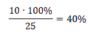

Простые проценты
В 5, 6, 7, 8, 9 классах в задачках по математике на проценты сравнивают части одного целого, определяют долю части от целого, ищут целое по части. Давайте рассмотрим все виды задач на проценты.
Тип 1. Нахождение процента от числа. Чтобы найти процент от числа, нужно число умножить на процент.
Задача
Блогер записал 500 видео для соцсети, но его продюсер сказал, что 20% из них неинтересны. Сколько роликов придется перезаписать блогеру?
Как решаем: нужно найти 20% от общего количества снятых роликов (500).
20% = 0,2
500 * 0,2 = 100
Ответ: из общего количества снятых роликов продюсер забраковал 100 штук.
Тип 2. Нахождение числа по его проценту
Чтобы найти число по его проценту, нужно его известную часть разделить на то, сколько процентов она составляет от числа.
Задачи по поиску процента по числу и числа по его проценту очень похожи. Чтобы не перепутать внимательно читаем условия, иначе зайдем в тупик или решим неправильно. Если в задании есть слова «который», «что составляет» и «который составляет» — перед нами задача по нахождению числа по его проценту.
Задача
Школьник решил 40 задач из учебника. Что составляет 16% числа всех задач в книге. Сколько всего задач собрано в этом учебнике?
Как решаем: мы не знаем, сколько всего задач в учебнике. Но нам известно, что 40 задач составляют 16% от общего количества.
Запишем 16% в виде дроби: 0,16. Далее известную нам часть целого разделим на ту долю, которую она составляет от всего целого.
40 : 0,16 = 40 · 100 : 16 = 250
Ответ: 250 задач собрано в этом учебнике.
Тип 3. Нахождение процентного отношения двух чисел
Чтобы найти, сколько процентов одно число составляет от другого, нужно ту часть, о которой спрашивается, разделить на общее количество и умножить на 100%.
Задача. В секретном сообществе 25 человек. 10 из них — девочки. Сколько процентов девочек в сообществе?
Как решаем: поделим 10 на 25, полученную дробь переведем в проценты.
Ответ: в сообществе 40% девочек.
Тип 4. Увеличение числа на процент
Чтобы увеличить число на некоторое количество процентов, можно найти число, которое выражает нужное количество процентов от данного числа, и сложить его с данным числом.
А можно воспользоваться формулой:
a = b · (1 + с : 100),
где a — число, которое нужно найти,
b — первоначальное значение,
c — проценты.
Задача. В прошлом месяце пакет молока стоил 110 рублей. А в этом месяце на 12% больше. Сколько стоит молоко сейчас?
Как решаем: можно найти 12% от 110:
0,12 · 110 = 13,2.
Прибавить к исходному числу:
110 + 13,2 = 123,2 рубля.
Или можно воспользоваться формулой, тогда:
110 · (1 + 12 : 100) = 110 · 1,12 = 123,2.
Ответстоимость молока в этом месяце — 123 рубля 20 копеек.
Тип 5. Уменьшение числа на процент.
Чтобы уменьшить число на несколько процентов, можно найти число, которое выражает нужное количество процентов данного числа, и вычесть его от данного числа.
А можно воспользоваться формулой:
a = b · (1 − с : 100),
где a — число, которое нужно найти,
b — первоначальное значение,
c — проценты.
Задача. В прошлом году школу закончили 100 ребят. А в этом году выпускников на 25% меньше. Сколько выпускников в этом году?
Как решаемможно найти 25% от 100:
0,25 · 100 = 25.
Вычесть из исходного числа 100 − 25 = 75 человек
Или можно воспользоваться формулой, тогда:
100 · (1 − 25 : 100) = 75
Ответ: 75 выпускников в этом году.